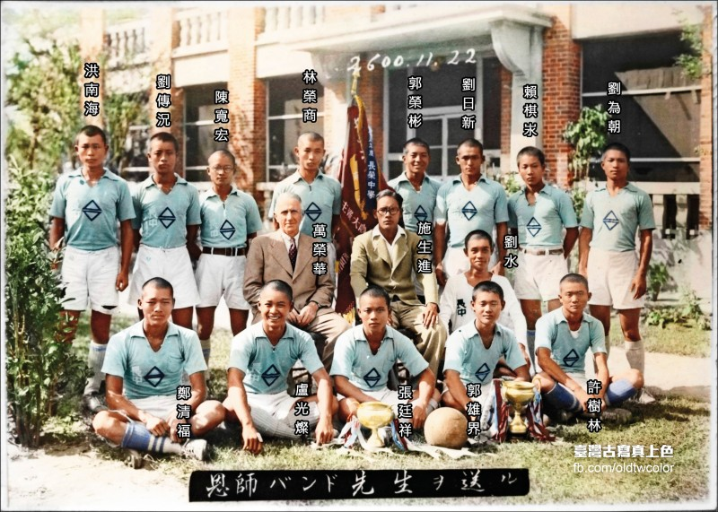
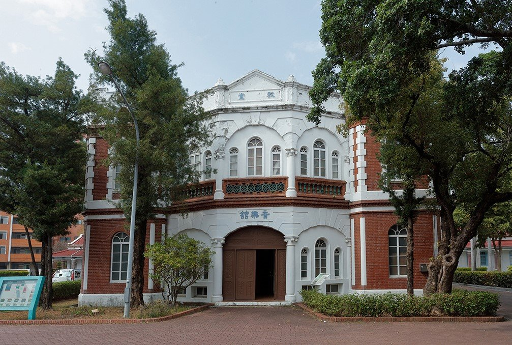

壹、敬愛的萬能校長 — 萬榮華校長
一、我們敬愛——集牧師、數學家、運動家、教育家於一身的「萬能校長」
萬榮華（Edward Band, 1886年1月7日-1971年3月22日），本名愛德華·本德，英國伯肯黑德人。英國長老教會傳教士，1914年擔任台南長老教中學校（今長榮中學）校長，任內將英式足球引進校園，是台灣足球運動的先驅。
是一位才華橫溢、心懷世界的英國長老教會傳教士。他不僅是一位牧師，更是一位數學家、運動家與教育家。他將一生中最光輝的歲月，奉獻給了遠東一隅「台灣」，並在這片土地上，留下了無可取代的足跡。
他以牧師的慈愛、數學家的嚴謹、運動家的熱血、教育家的遠見，成為台灣近代教育史上的傳奇人物。
萬榮華校長的教育精神融合了知識、信仰、運動與品格的培育，他對學生的關心無微不至，因此學生們親切地稱呼他為「萬能校長」。這個稱號，不僅源於他在學術、宗教、體育等多方面的才華，更是對他人格與奉獻精神最深刻的敬愛。
（一）牧師——以信仰為基石，培育誠信仁愛的人格
作為牧師，萬榮華校長深知教育不僅止於知識傳授，更關乎心靈的塑造與品格的養成。他在校內設立聖經課程，開辦晨禱與主日禮拜，引導學生內省自我、修養德性。在課餘時，他也開設聖經閱讀與倫理討論課，啟發學生思考人生意義與價值觀。
萬校長並不以權威姿態教誨，而是以溫和堅定的態度，陪伴學生探索信仰與生命。他堅信：「誠信、仁愛與正直，是人類最大的資產。」這種信仰融入教育的方式，使長榮中學成為一所兼具知識與品格培育的典範學校。
（二）數學家——推動科學理性教育，用理性開啟思考之門
萬榮華校長掌理校務期間，也親自擔任英語、數學、物理等科教學，在課堂上，他是另一種溫柔：他用數學的嚴謹，引導學生看見世界的秩序與美麗。他教的不僅是公式與定理，更是如何發問、如何思考、如何以邏輯破解生命中的難題。
在他的推動下，數學教育不再僅是考試科目，而是成為訓練思維、培養理性精神的重要工具。許多受教於他的學生，後來成為各領域的優秀人才，深深感佩於萬校長扎實的教學與啟蒙。
（三）運動家——引進英式足球，為台灣足球運動的引路人
曾經是劍橋大學足球隊隊長的他將英國盛行的足球運動引進台灣校園，是台灣足球運動的先驅。1914年到長老教中學校擔任校長時，看見台灣學生日常生活中充滿活力，燃起了他在劍橋足球隊的足球魂，決定要在校園推廣足球。
1916年，他組織了校內首支足球隊，規劃正式比賽制度，並親自教導規則與戰術，學生們赤腳踢足球，每天下課，學生分成東西學寮彼此對抗，萬校長自己也穿運動裝下場，在泥濘的操場上，他與學生們赤腳奔跑，跌倒、再爬起，汗水與笑聲交織成最動人的旋律。他教的不只是技巧，而是精神：
- 失敗了，拍拍膝蓋，笑著再來。
- 進球了，擁抱隊友，勝利屬於全隊。
- 競賽中，尊重對手，堅持公平。
有學生曾說：「萬校長教會我們，輸贏只是過程，真正重要的是在奔跑中不斷突破自己的極限。」

圖右：台灣足球之父萬榮華（Edward Band）。圖左：1940長榮中學足球隊勇奪台灣冠軍合影（出自長榮中學百年史）。（取自聚珍台灣網頁）
然而，在足球隊每次參加比賽前，萬校長一定說：「Do your best!」。而當隊員聽到「萬校長來了！」時，士氣必定會大振，打球打得特別起勁。在1940年時奪得了全國中等學校地方選拔賽兼台灣中等學校足球錦標賽冠軍，成為全國大賽首支台灣人組成的隊伍，代表台灣進軍甲子園，名震一時。雖到日本本土第一戰遇到近畿代表的常勝軍滋賀師範，但已使長中成為台灣中學校中足球強者。在萬榮華校長自啟蒙和推動下，長榮當年足球氣氛相當興盛，不只運動場上時常擠滿著人，從校園到城區，無處不見踢球學生的身影。
1940年8月，中學足球隊遠征甲子園，幾個月後臺灣足球運動的靈魂人物萬榮華先生（Edward Band）迫於局勢無奈離開臺灣，學生極為不捨，這張照片即為萬校長與足球隊合影留念。
萬校長身材高大結實也教導學生各種運動，不論足球、單槓、雙槓、跳箱、游泳都難不倒他，並重教育與強健的體魄，更鼓勵學生參與實作。他透過足球培育學生勇於挑戰、互助合作、榮譽至上的運動家精神，影響深遠。足球在學生中激發了團隊精神、競爭意志與堅韌品格，學生在足球場上所燃起的鬥志，成為他們日後面對人生挑戰時最堅強的力量。也象徵著萬榮華校長對於「全人教育」理念的具體實踐。
（四）教育家——倡導全人教育，推動現代化學校管理
校長相信，真正的教育，應該讓一個人成為完整的人——有知識的頭腦，有正直的心靈，有健壯的身體，有寬廣的視野。因此，他不僅改革課程，導入最新的自然科學與社會科學教材；他更注重啟發式教學與學生主體性的培養。所以推動學生自治，鼓勵辯論、演講、科學實驗、社團活動，讓學生從課本中走向真實世界。他重視每一位教師的成長與專業發展，主張教師是「生命影響生命」的工程師。
在1961年，為實踐萬榮華校長「西學為用」的教育使命，傾力打造配備尖端科學儀器的現代化科學館，讓學子得以親手觸碰實驗的奧秘，體現了長榮中學「傳授西學」的精神。
然而，他對教育的理想遠遠超越課堂教學。他以「身、心、靈全面發展」為目標，推動長榮中學成為一所重視德、智、體、群、美五育均衡發展的現代化學校。使長榮中學成為當時台灣最具現代精神的中學之一。
（五）萬能校長的永恆傳奇——融合信仰、理性、體育與教育實踐的生命典範
因為他在宗教指導、數學教學、體育推動與教育領導等多方面皆展現非凡成就，加上對學生真誠無私的關懷，萬榮華被學生親切地譽為「萬能校長」。他以一己之力，融合了東西方教育精髓，開創了台灣近代教育的一個新局。他不僅教會了學生如何學習，更教會了他們如何做人、如何尊重生命、如何追求真理。
即便在返英後，他仍以著作《台灣教會史》記錄與傳播台灣的文化與精神。他一生的努力，不僅改變了一所學校，也深刻影響了整個台灣社會的教育面貌。
萬榮華校長雖身已遠，但他在台灣留下的，不只是一所學校、一項運動、一種教育制度；他留下的，是一座點燃心靈之火的燈塔，照亮了無數人的生命航程。「萬能校長」的精神，仍在長榮中學、在台灣的土地上，綿延流傳，啟發後人。
萬榮華校長留給我們：
一種相信教育可以改變世界的信念，
一種用生命去點亮他人生命的勇氣。
他是真正的「萬能校長」用一生，成就了無數人的一生。
二、讓紅磚說話，讓精神流傳之校長宿舍現為「校牧室」
（一）用紅磚寫就的百年情書
在長榮中學的綠蔭掩映間，有一棟紅磚砌成的小樓，靜靜矗立近一個世紀。1920年由萬榮華校長以私人積蓄親手興建的校長宿舍，卻從來不是只屬於個人的安身之所。它不是華麗宮殿，也非現代高樓，卻以樸實紅磚與歲月交織，成為校園裡最具靈魂的存在。
這裡，不只是一幢老屋，更是一座以愛與信仰築起的歷史坐標。在溫暖的紅磚牆之內，藏著一段段動人的故事，關於無私的奉獻、真摯的師生情誼，以及一所學校如何以愛與信仰，成就了無數年輕生命。一座建築，承載一個時代的信仰與溫度是臺南市市定古蹟。

左：1921年，萬榮華校長宿舍時期南側立面。右：1984年，校牧室時期西南側立面。
（二）從「校長公館」到「心靈殿堂」
校長公館興建於1920年，見證著百年前一位年輕外籍校長萬榮華（Edward Band）對教育的深情與承諾。他用自己的積蓄，不為自豪，不求回報，只為給學校、給學生一個更完整的空間。
他將一樓全數提供學校使用，作為醫務室、輔導室、會談室，成為無數學生傾訴煩憂、療癒心靈的處所。他僅居於二樓一隅，卻用整棟建築，書寫了「教育無私」的最佳註解。
這不是一座宿舍，它是生命之間彼此成全的見證，是一幢會呼吸、有靈魂的心靈殿堂。
（三）東西交融的紅磚交響詩
校長公館的美，不僅在故事，更在建築本身。它融合了閩南與西洋風格的「閩洋折衷」建築語彙，成為台灣近代建築史上的珍貴一頁。
- 紅磚拱廊：弧形如虹，沉穩中散發溫度；每一塊磚，皆手工砌成，堆疊出歷史的厚度。
- 對稱式二層設計：不僅展現出西方建築的嚴謹與對稱美感，更巧妙適應台灣濕熱多變的氣候，展現英式建築的嚴謹理性。
- 十字煙囪與灰泥牆面：典雅之中蘊藏機能性，專為台灣亞熱帶氣候量身打造。
- 原木樓梯與拱門細節：至今仍完好保留，踏上一階，就像踏入了百年前的時光隧道。
即便1982年為結構補強而加入鋼筋混凝土，整體依然保留原貌，校長公館沒有被時間吞蝕，反而更加鮮明地活出它的故事。
（四）不僅是建築，是信仰的容器
然而，校長公館真正的價值，從來不限於磚瓦與設計。它承載了長榮中學最核心的精神「愛與服務」。萬榮華校長以一己之力，開啟了以生命照亮生命的教育使命；此後歷代師生，也在這座紅磚建築中，接續書寫著屬於自己的成長故事。
有人在這裡初次學會聆聽與關懷；
有人在這裡重新拾起破碎的夢想；
有人在這裡遇見了改變一生的啟蒙老師；
有人在這裡立下「成為他人祝福」的志願。
如今作為校牧室，校長公館依然發揮心靈輔導的功能，讓信仰與關懷的光在其中持續閃耀。這裡，是許多孩子第一次認識愛的地方；是他們低谷時的避風港，為每一位迷惘、困頓或渴望力量的青年，默默點燈。
（五）讓紅磚說話，讓精神流傳
當晨光灑落在校牧室斑駁的紅磚上，當微風拂過拱廊間沉靜的歲月，我們聽見了歷史在低聲吟唱，聽見了一個校長、一群師生，如何用生命交織出一首愛與信仰的長歌。
校牧室，不僅是建築，它是夢想的容器，是靈魂的家園。讓我們一起守護它，讓百年前那份溫柔而堅定的光芒，繼續照亮未來每一位長榮學子的夢想之路。
（六）一座校園的靈魂，一个世代的記憶
校牧室已不僅是校園的一角，而是長榮人心中最柔軟的位置。它讓人明白：歷史不應只是供人懷舊，而應成為薪火相傳的力量。
這座紅磚建築，見證過百年前的純粹，也渴望參與未來的榮光。為此，我們發起【愛校護校計畫】，匯聚每一份熱愛與責任，守護校長公館繼續矗立，讓它不僅見證過往，也迎接未來每一位夢想的腳步聲。
每一份支持，都是對歷史的守護；
每一份參與，都是對教育的承諾；
每一份心意，都將成為學子們成長路上最堅定的祝福。